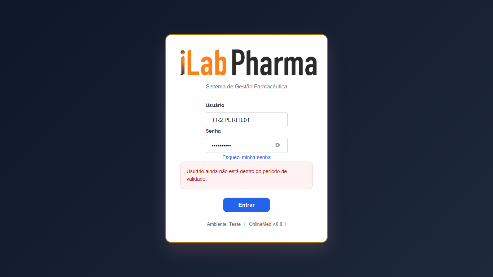

Menu: Administração · Situação do manual: Em ajuste (prints e conferência de 17/11/2026) · Fonte dos prints: versão nova.
Cuidados e falhas conhecidas
| Defeito | Gravidade | O que acontece | Situação (revalidação de 16/11/2026 e conferência de 17/11/2026) |
|---|---|---|---|
| DV-PRI-024 (do legado) | Alta | Alterar permissões sem justificativa: o histórico não diz o motivo | Persiste (17/11: sem campo de justificativa na edição nem na inativação; prints 23 e 29) |
| DV-PRI-N-011 | Alta | A API não conferia as funções: quem só consultava conseguia gravar um perfil novo | Corrigido no servidor (403) |
| DV-PRI-N-063 | Baixa | A tela de edição abre pelo endereço com SALVAR ativo e a recusa do servidor (403) não é avisada | Repete em 17/11/2026 (prints 33 e 34) |
| DV-PRI-N-036 | Alta | Inativar o perfil não tirava o acesso de quem o usava | Corrigido em 16/11: o login é recusado; falta a mensagem na tela (DV-PRI-N-062, no manual do Login). Não refeito em 17/11 (ver DN-R2A-04) |
| DV-PRI-N-037 | Média | O perfil inativo some da caixa de perfis da Conta usuário e quem salvar a conta perde o vínculo sem perceber | Sem reteste: não testado em 17/11/2026 (repetia em 04/11) |
| DV-PRI-N-006 | Média | A caixa de perfis da Conta usuário mostrava só 10 perfis | Corrigido na edição da conta; o filtro "Perfil" da lista da Conta usuário ainda mostra 10 (repete em 17/11/2026, ver manual da Conta usuário). A lista desta tela traz os 52 perfis em 6 páginas |
| DV-PRI-N-051 | Baixa | Perfil sem nenhuma função é aceito; a conta ligada a ele não consegue entrar | Repete em 17/11/2026 |
| DV-PRI-N-059 | Média | O histórico mostra uma linha por permissão e 4 linhas por página: o perfil 20 tem 3.239 linhas em 810 páginas, sem agrupar e sem justificativa | Novo (10/11/2026). O robô de 17/11 não percorreu as 810 páginas (a paginação mostra 1 a 10 e "»") |
| DV-PRI-N-003 | Média | A faixa de nome repetido some em poucos segundos | Repete (cerca de 3 segundos, print 21) |
| DV-PRI-N-009 | Baixa | A pesquisa não ignora acento | Repete em Perfil (17/11/2026: "negocios" e "agua" não acham; "negócios" e "água" acham). A contradição do manual está resolvida |
| DV-GQ-N-008 | Alta | Um perfil novo com as funções da GQ faz o menu da GQ aparecer, mas o servidor da GQ recusa tudo para quem o usa (só o perfil ADMINISTRADOR funciona). Causa não confirmada; ficha de outro módulo | Não testado em 17/11/2026 |
Candidato a defeito (rascunho DN-R2A-04, a promover): conta criada à noite fica "fora do período de validade". Gravidade Média (data e fuso; controle de acesso, RDC 658/2022 e Guia 33/2020). Depois das 21h de Brasília a conta nova recebe início de validade do dia seguinte (a data do servidor é a de Greenwich): Início de validade e Data do cadastro mostram 17/11/2026 enquanto em Brasília ainda é 16/11/2026, e o Login responde "Usuário ainda não está dentro do período de validade.". Ajustar o início para 16/11 não pediu confirmação nem gravou. Isso impediu o robô de conferir o efeito do perfil no acesso, por isso o defeito está registrado neste manual.

A imagem mostra a recusa "Usuário ainda não está dentro do período de validade." no Login, para uma conta criada à noite.
Recomendações de uso enquanto as falhas existem: use nomes de perfil sem depender da ordem alfabética para ligar contas pelo filtro; confira no histórico quem alterou as permissões; registre o motivo de cada mudança fora do sistema; não confie na busca sem acento para concluir que um perfil não existe.
Diferenças em relação ao legado
| Ponto | Legado (perfil_lst, perfil_ed) | Versão nova | Classe |
|---|---|---|---|
| Pesquisa com e sem acento | Não ignora acento (DV-PRI-008) | Não ignora (conferido em 17/11/2026: "negocios" e "agua" não acham; "negócios" e "água" acham). A "Fase 2" de 09/11/2026, que dizia o contrário, estava errada | Igual (DV-PRI-N-009) |
| Obrigatório e mínimo | "Preencha o Perfil" | "Preencha os campos obrigatórios antes de salvar." e "Descrição é obrigatória e deve ter no máximo 45 caracteres." | Igual (RG-PRI-031) |
| Funções do perfil | Árvore por módulo; marcar a ação marca a tela | Aba por módulo; marcar a tela marca as quatro ações; desmarcar uma ação deixa a tela marcada | Igual (RG-PRI-032) |
| Alterar permissões | Sem justificativa (DV-PRI-024) | Sem justificativa; histórico com NOVA PERMISSÃO e PERMISSÃO EXCLUÍDA | Igual, com a falha (RG-PRI-033 e 034) |
| Inativar | Permitido; sem ação sobre o acesso | Permitido; sai da lista de ativos; em 16/11/2026 bloqueia o login de quem tem só esse perfil | Novo (RG-PRI-035); acesso: corrigido em 16/11 |
| Excluir perfil | Não existe | Não existe; o servidor recusa (405, teste de 16/11/2026) | Novo (RG-PRI-036) |
| Caracteres do nome | O legado removia _, ', - e / sem aviso e gravava em maiúsculas (DV-PRI-001) |
Tudo gravado como digitado: sublinhado, hífen, barra, apóstrofo e aspas, em minúsculas (17/11/2026) | Melhoria |
| Perfil sem função | Gravava; quem só o tinha não entrava | Igual (DV-PRI-N-051, repete em 17/11/2026) | Igual |
| Histórico | 4 linhas por página, sem justificativa | 4 linhas por página, uma linha por permissão (810 páginas num perfil) | Igual, agravado na prática (DV-PRI-N-059) |
| Gravação sem função na API | O legado só abria as telas (DV-PRI-025) | Corrigido no servidor em 16/11/2026 (403) | Melhoria (DV-PRI-N-011) |
| Ícone Consultar (lupa) | Existia para quem só tinha a consulta | Não há ícone separado nem ação Consultar; o lápis abre o formulário (apagado para quem só consulta) | Diferente |
Contradições encontradas: a divergência sobre o acento (resumo da tela RG-PRI-030 e ficha DV-PRI-N-009 contra a "Fase 2" e o caso BA-PER-13) foi resolvida em 17/11/2026: a pesquisa de Perfil não ignora acento, e vale o resumo. Resta a diferença entre o quem-pode.csv (09/11/2026), que mostra a lista de Perfil aberta para o perfil "cadastro", e o reteste de 16/11/2026 da DV-PRI-N-011, que mostra a leitura de perfis recusada (403) para conta só de cadastros: o segundo é mais recente.
Prints que faltam
Em 17/11/2026 o robô percorreu o passo a passo e refez os prints. Falta só:
| Passo ou estado | O que mostrar | Por quê |
|---|---|---|
| Excluir perfil pela API (405) | A recusa do servidor | Não foi possível: só dá para conferir por chamada direta com a credencial da sessão, que o robô não usou. Vale o resultado de 16/11/2026 |
| Histórico do perfil 20 até a última página | A página 810 | Não foi possível: há páginas demais para clicar uma a uma. Vale a evidência de 10/11/2026 (PN203-P40) |
| Mudança de permissão vale no próximo acesso | O usuário antes e depois da mudança | Não foi possível: a conta criada à noite só entra depois da meia-noite (DN-R2A-04). Refazer a partir da meia-noite de Brasília |
| Login com perfil inativo ("Usuário sem perfil de acesso.") | A recusa no Login | Não foi possível pelo mesmo motivo; vale a evidência de 16/11/2026 (DV-PRI-N-036-r16-4) |
| Perfil inativo na caixa de perfis da Conta usuário (DV-PRI-N-037) | A caixa sem o perfil inativo | Não testado em 17/11/2026 (outra tela) |
| Perfil novo da GQ sem acesso à GQ (DV-GQ-N-008) | O menu da GQ e a recusa do servidor | Não testado (ficha de outro módulo) |